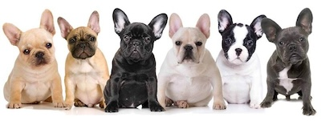

Welcome to Cincinnati's French Bulldog Community Hub
Introducing your go-to community for all French Bulldog enthusiasts in the Cincinnati area!
Whether you're a proud Frenchie parent or just an admirer of these lovable pups, you're in the right place. Here, we celebrate the unique charm of French Bulldogs while connecting owners and fans alike.
Join us to share stories, discover local events, and connect with fellow Frenchie lovers. Explore our resources, engage with our vibrant community, and be a part of the fun and friendship that make our hub truly special.